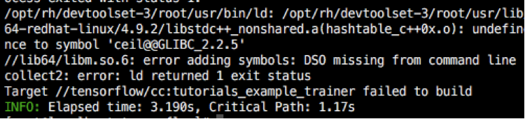

TensorFlow编译安装
环境： redhat6.5、jdk1.7.0_45
依赖软件： devtoolset-3、python2.7.12、cuda7.5、cudnn v5.0、tensorflow0.9
注意：redhat6.5 gcc版本为4.4.7，需要安装devtoolset-3 yum install devtoolset-3-gcc devtoolset-3-gcc-c++（提供版本4.9.2） scl enable devtoolset-3 bash 生效,否则gcc command not found，完成后通过gcc -v查看版本
可参考 devtoolset-3安装
注意：redhat6.5 python版本为2.6，需要升级python2.7，因为tensorflow依赖python2.7
可参考 python升级
1. 安装Bazel
git clone https://github.com/bazelbuild/bazel.git
cd bazel
其中需要修改tools/cpp/CROSSTOOL文件，找到toolchain_identifier:"local_linux"的代码块，将tool_path都替换成devtoolset-3中的路径，如：/usr/bin/ar => /opt/rh/devtoolset-3/root/usr/bin/ar
./compile.sh
编译会报错，因为我们的JDK版本是1.7，所以需要修改scripts/bootstrap/buildenv.sh 第36行代码，如下图：
在编译的过程，通过查看临时文件中的错误，发现：
所以仍然不建议使用JDK1.7，毕竟从bazel0.1开始，就不赞成使用JDK1.7，缺省使用JDK1.8了。
之后还会遇到错误，如下：
这是因为StandardLocation类虽然从JDK1.6就有了，但是静态成员NATIVE_HEADER_OUTPUT却是从JDK1.8才有，所以需要修改src/java_tools/buildjar/java/com/google/devtools/build/java/turbine/javac/ZipOutputFileManager.java 第59行代码
最后，编译成功，生成文件在output/bazel，链接到/usr/local/bin/bazel即可使用。
2. 安装TensorFLow
准备工作：需要安装cuda,cudnn
本次使用的是cuda7.5 cudnn-5.0
git clone https://github.com/tensorflow/tensorflow
./configure 如下配置：
!需要修改third_party/gpus/crosstool/CROSSTOOL和third_party/gpus/crosstool/clang/bin/crosstool_wrapper_driver_is_not_gcc具体如下：
之后开始编译:
bazel build -c opt -config=cuda --verbose_failures //tensorflow/cc:tutorials_example_trainer
其中会碰到很多问题，整理如下：
1.ImportError: No module named numpy
安装pip,注意是为升级后python安装,然后pip install numpy
2.ImportError: No module named argparse
同上，缺失argparse，所以pip install argparse
3.错误如下：

修改相应文件如下：
4.Out of Memory:
原因可能是bazel在编译时默认的并行线程数太大，造成内存消耗太大，通过指定local_resources和jobs重新编译，更改如下：
bazel build -c opt --config=cuda --verbose_failures --local_resources 2048,2.0,1.0 -j 1 //tensorflow/cc:tutorials_example_trainer
可参考bazel手册
最终编译成功：
测试如下：
如果需要支持gpu,上述命令加--use_gpu